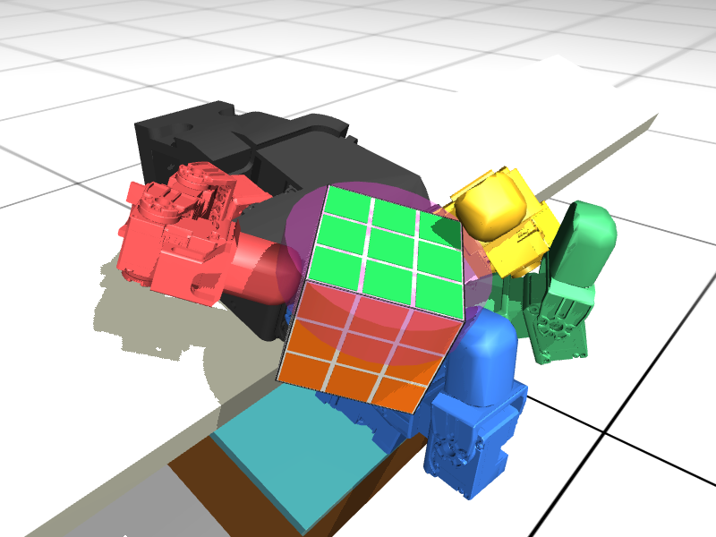
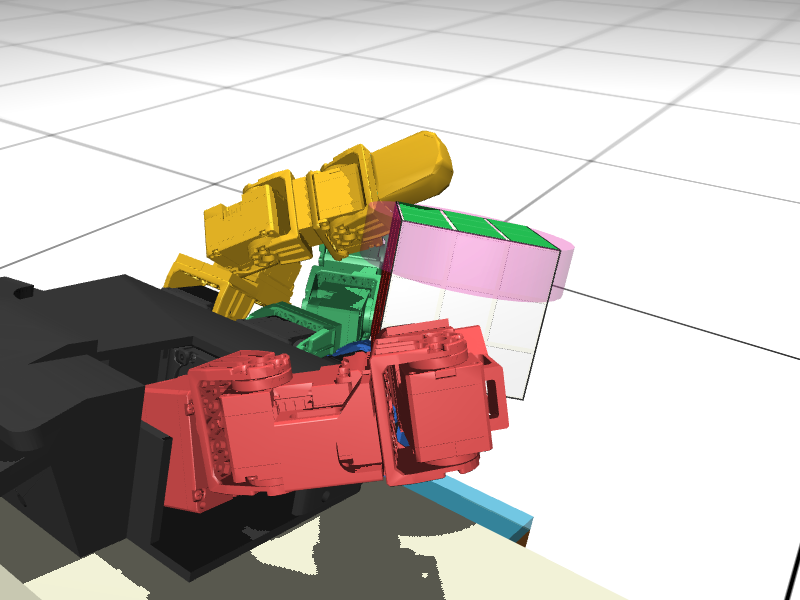
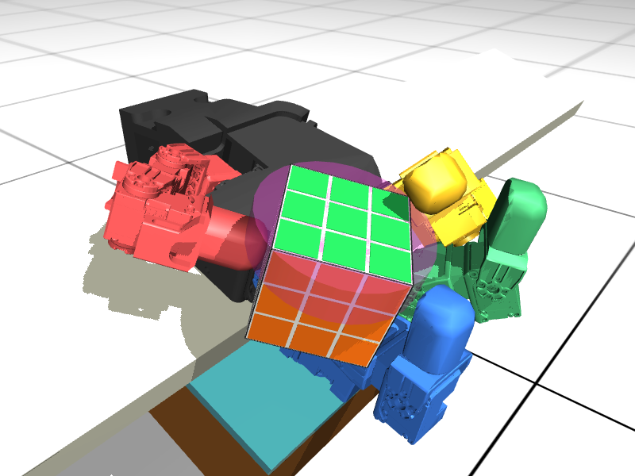
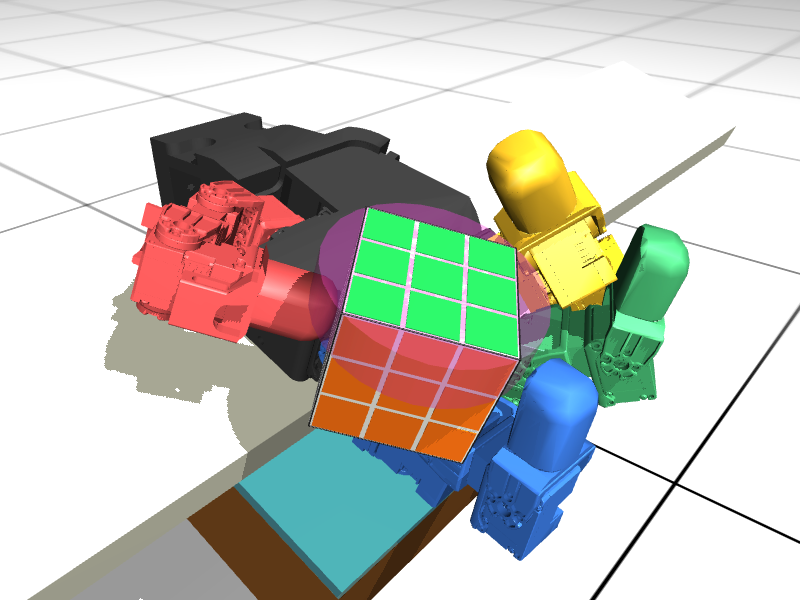
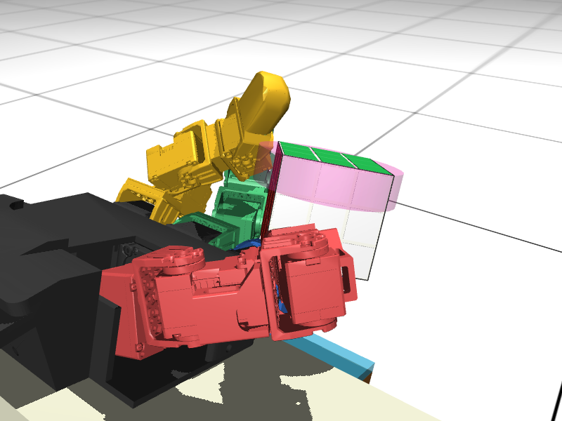

초기 배치에서 회전해 도달한 결과는 아니다. 별도로 배치한 약지 지지 파지에서 검지 끝을 비우고 약지를 옮기는 두 구간을 연결했다. 실물 테스트와 다음 90도 회전은 남아 있다.
파랑: 검지 · 초록: 중지 · 노랑: 약지 · 빨강: 엄지. 분홍 원통은 윗단 한 층을 90도 돌릴 때 차지하는 영역이다. 그림과 영상은 모델 결과다.
검지 공간 확보 90목표 → 약지 이동과 유지 302목표. 총 392목표 동안 원래 관절 범위·충돌 형상·2틱/75ms 조건을 유지했다.
| 마지막 4.05초 | 모델 결과 |
|---|---|
| 전체 손 지지 | 100% |
| 윗단 공간 인증 | 4050/4050상태, 하한 0.372mm |
| 90도 목표 자세 오차 | 0.520도 |
| 공통 파지 위치 오차 | 1.633mm |
| 유지 중 변화 | 0.018도 / 0.012mm |
마지막 자세에서는 약지가 큐브에 닿지 않는다. 검지 뿌리·검지 마디·엄지의 모델 접촉으로 지지가 유지됐다. 약지로 세 면을 고정한 결과나 왼손 회전 하중을 버틴 결과로 해석하지 않는다.
저장한 자유 동역학 경로, 약 4배속. 출발은 별도로 배치한 모델 파지다.





아래 결과는 별도 초기화한 작업 파지에서 지령을 유지한 모델 검사다. 실제 왼손 하중 측정이나 실물 허용치가 아니다. 두 방향의0.001N·m까지 시험 조건은 통과했지만0.003N·m부터 자세·공간 또는 지지가 미달했다.
| 조건 | 유지·공간 | 최대 방향 변화 | 중단/마지막 공간 미달 |
|---|---|---|---|
| nominal | 통과 | 0.018도 | 없음 |
| friction025 | 통과 | 0.019도 | 없음 |
| friction035 | 통과 | 0.018도 | 없음 |
| moment-0.0005 | 통과 | 0.185도 | 없음 |
| moment+0.0005 | 통과 | 0.093도 | 없음 |
| moment-0.001 | 통과 | 0.388도 | 없음 |
| moment+0.001 | 통과 | 0.211도 | 없음 |
| moment-0.003 | 미달 | 115.362도 | external_cube_support |
| moment+0.003 | 미달 | 0.970도 | cadtip_mf_rf_rf_ds_0 |
| moment-0.01 | 미달 | 128.719도 | external_cube_support, cube_translation_over80mm |
| moment+0.01 | 미달 | 5.501도 | cadtip_mf_rf_rf_ds_0 |
기존 초기 배치의 회전 경로는 현재 모델에서 미달이다. 이번에 확보한 작업 파지로 들어오는 경로와 그 파지에서 다음 회전으로 나오는 경로를 검증해야 한다. 완전한 모델 관측과 가정한 마찰·토크 한도 아래의 결과이며 실제 450mA나 카메라 등록을 검증한 것은 아니다.
연결 재검사 · 약지 이동 비교 · 기존 공간 침범 근거 · 그림·영상 출처 · 전체 진행 기록